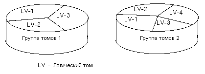

Использование системы управления
логическими томами
Автор: (c) 2002 Vinayak Hegde
Перевод: (c) 2003 Иван Песин
Задача, с которой сталкиваются все пользователи Linux, это оценка размеров и разметка дискового пространства на разделы во время установки системы. И не имеет значения, системный ли это администратор, управляющий площадкой серверов, или это обычный/продвинутый пользователь, обнаруживший, что у него заканчивается место на диске. Звучит знакомо, не так ли? Вот и начинается "борьба за место". О! У пользователя появляется блестящая идея и проблема решена (после нескольких бессонных ночей) с использованием разных некрасивых методов (читай: "грязных хаков") -- например, символических ссылок между разделами, или утилит для изменения размеров разделов (parted). Но, в общем, это все временные решения и рано или поздно мы снова встаем лицом к лицу с той же проблемой.
Как хотелось, чтобы это проблема была решена!! Сидящий в тебе экспериментатор хочет, чтобы у тебя была система, в которой можно спокойно экспериментировать не оглядываясь на размеры разделов, а дисковое пространство могло просто подключатся и удалятся по мере надобности. Если же вы -- системный администратор, управляющий серверами, постоянно подключенными к Internet, ставки гораздо выше. Каждая минута простоя приносит убытки. И, возможно, что потенциальный клиент не вернется на ваш сайт. Едва ли вы сможите избежать необходимости перезагрузки, после изменений в таблице разделов. И так, каждый раз, когда заканчивается дисковое пространство. LVM, Система управления логическими томами, поможет вам выходить победителем в таких ситуациях.
Linux LVM может сделать вашу жизнь легче. Эта система реализует более высокий уровень абстракции при рассмотрении пространства хранилищ, чем разделы или диски. LVM была внедрена в ядро Linux, начиная с серии 2.4.x (есть патчи для ядер серии 2.2.х - Прим.пер.). Перед тем как перейти к детальному рассмотрению технологии LVM, рассмотрим некоторые концепции и термины, которыми мы будем пользоваться.

Физический том -- обычно, это раздел жесткого диска (или весь жесткий диск - Прим.пер.) или устройство, которое работает аналогично разделу, например устройство RAID (в том числе и программный - Прим.пер.).
Один и более физических томов образуют логический том. Логический том LVM идеологически аналогичен разделу жесткого диска не-LVM системы. Логический том может содержать файловую систему, например /home или /usr.
Один и более логических томов образуют группу томов. Группа томов LVM идеологически аналогична жесткому диску в не-LVM системе. Группа томов формирует из множества логических томов административную единицу.
Теперь, владея терминологией LVM, посмотрим, как это все работает. Каждый физический том делится на части, которые называются физическими экстентами (Physical Extents, PE). Размер физических экстентов может варьироваться, но един в пределах группы томов. В пределах физического тома каждый физический экстент имеет уникальный номер. Физический экстент -- минимальный блок пространства, который может быть адресован системой LVM на физическом хранилище.
Аналогично, каждый логический том состоит из минимальных адресуемых блоков, носящих название логических экстентов (Logical Extents, LE). В пределах группы томов размер логического экстента равен размеру физического. Очевидно, что размер логических экстентов одинаков для всех логических томов группы.
Каждый PE обязательно имеет уникальный номер в пределах физического тома, но не обязательно в пределах логического. Это связано с тем, что логический том может состоят из нескольких физических, потому уникальность идентификаторов PE невозможна. Следовательно, для идентификации LE используются как идентификаторы LE, так и соответствующие им PE. Как указывалось выше, существует взаимно-однозначное отображение LE на PE. При каждом доступе к хранилищу используется идентификатор LE для реальной работы с физическим устройством.
Теперь возникает вопрос, где хранятся все эти мета-данные о логических томах и группах томов. Как известно, в не-LVM системах, данные о разделах хранятся в таблице разделов. В LVM системе существует область дескрипторов группы томов (Volume Group Descriptor Area, VGDA), работающая аналогично таблице разделов. Она хранится в начале каждого физического тома.
VGDA содержит такие данные:
При старте системы активируются логические тома и группы томов, а VGDA загружается в память. VGDA позволяет определить, где расположены LV. При попытке системы обратиться к устройству, используется таблица соответствия (при помощи VGDA) для определения физического адреса, используемого в операции ввода-вывода.
Посмотрим, как используется LVM :
Перед началом работы с системой LVM, убедимся в наличии
необходимых модулей:
ваше ядро должно содержать поддержку LVM.
Включается она таким образом:
# cd /usr/src/linux
# make menuconfig
в меню :
Multi-device Support (RAID and LVM) -->
активировать такие опции:
[*] Multiple devices driver support (RAID and LVM)
<*> Logical volume manager (LVM) Support.
Это можно сделать командой:
# df -h Filesystem Size Used Avail Use% Mounted on /dev/hda1 3.1G 2.7G 398M 87% / /dev/hda2 4.0G 3.2G 806M 80% /home /dev/hda5 2.1G 1.0G 1.1G 48% /var
При помощи fdisk, или любой другой утилиты, создайте разделы LVM. Тип разделов linux LVM -- 8e.
# fdisk /dev/hda нажмите p (для вывода всей таблицы разделов) теперь n (для создания нового раздела)
После создания раздела Linux LVM выведите всю таблицу. Она должна выглядеть примерно так:
Device Boot Start End Blocks Id System /dev/hda1 * 1 506 4064413+ 83 Linux /dev/hda2 507 523 136552+ 5 Extended /dev/hda5 507 523 136521 82 Linux swap /dev/hda6 524 778 2048256 8e Linux LVM /dev/hda7 779 1033 2048256 8e Linux LVM
# pvcreate /dev/hda6 pvcreate -- physical volume "/dev/hda6" successfully created # pvcreate /dev/hda7 pvcreate -- physical volume "/dev/hda7" successfully created
Приведенные команды создают дескриптор группы томов в начале каждого раздела.
Создание новой группы томов и добавление двух физических томов происходит следующим образом:
# vgcreate test_lvm /dev/hda6 /dev/hda7 vgcreate- -- INFO: using default physical extent size 4 MB vgcreate- -- INFO: maximum logical volume size is 255.99 Gigabyte vgcreate- -- doing automatic backup of volume group "test_lvm" vgcreate- -- volume group "test_lvm" successfully created and activated
В результате будет создана группа test_lvm, содержащая
физические тома /dev/hda6 и /dev/hda7. Можно также указать
параметром команды размер экстента, если размер в 4MB, по
каким-либо причинам, нас не устраивает.
Активация группы томов выполняется командой:
# vgchange -ay test_lvm
Для просмотра параметров существующих в вашей системе групп томов используйте команду "vgdisplay".
# vgdisplay --- Volume group --- VG Name test_lvm VG Access read/write VG Status available/resizable VG # 0 MAX LV 256 Cur LV 1 Open LV 0 MAX LV Size 255.99 GB Max PV 256 Cur PV 2 Act PV 2 VG Size 3.91 GB PE Size 4 MB Total PE 1000 Alloc PE / Size 256 / 1 GB Free PE / Size 744 / 2.91 GB VG UUID T34zIt-HDPs-uo6r-cBDT-UjEq-EEPB-GF435E
Команда lvcreate используется для создания логических томов в группе.
# lvcreate -L2G -nlogvol1 test_lvm
Теперь нужно создать на логическом томе файловую систему. Допусти мы выбрали для данного тома журналируемую файловую систему reiserfs:
# mkreiserfs /dev/test_lvm/logvol1
Осталось ее смонтировать командой:
# mount -t reiserfs /dev/test_lvm/logvol1 /mnt/lv1
Для того, чтобы новая файловая система автоматически монтировалась при загрузке системы, добавьте следующую запись в файл /etc/fstab
/dev/test_lvm/logvol1 /mnt/lv1 reiserfs defaults 1 1
Если вы пересобирали ядро, скоприруйте его в каталог /boot. Можно присвоить ему другое имя, тогда вы будете иметь выбор между двумя конфигурациями, одна из которых поддерживает LVM. В этом случае в файл /etc/lilo.conf нужно добавить такие строки:
image = /boot/lvm_kernel_image label = linux-lvm root = /dev/hda1 initrd = /boot/init_image ramdisk = 8192
После изменения файла /etc/lilo.conf выполните команду
# /sbin/lilo
Логические тома позволяют легко менять свои размеры. Для этого используется команда lvextend. Пример расширения логического тома:
# lvextend -L+1G /dev/test_lvm/logvol1 lvextend -- extending logical volume "/dev/test_lvm/logvol1" to 3GB lvextend -- doing automatic backup of volume group "test_lvm" lvextend -- logical volume "/dev/test_lvm/logvol1" successfully extended
Аналогично, пример уменьшения размера логического тома:
# lvreduce -L-1G /dev/test_lvm/lv1 lvreduce -- -Warning: reducing active logical volume to 2GB lvreduce- -- This may destroy your data (filesystem etc.) lvreduce -- -do you really want to reduce "/dev/test_lvm/lv1"? [y/n]: y lvreduce- -- doing automatic backup of volume group "test_lvm" lvreduce- -- logical volume "/dev/test_lvm/lv1" successfully reduced
Как видно из нашего рассказа, LVM -- это полностью масштабируемое и очень простое в использовании решение. После настройки групп томов размеры логических томов легко меняются по необходимости.
Copyright (c) 2002, Vinayak Hegde.
Copying license http://www.linuxgazette.com/copying.html
Published in Issue 84 of Linux Gazette, November
2002